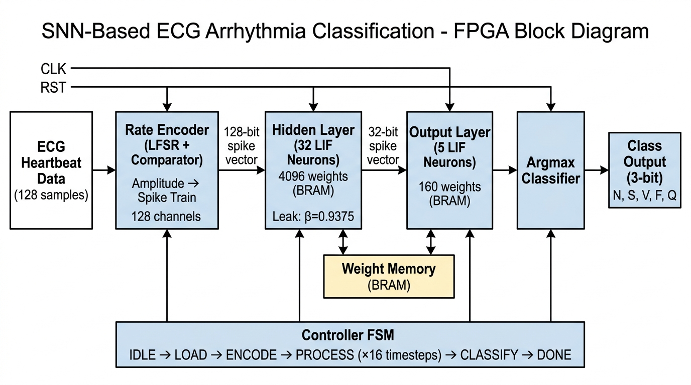
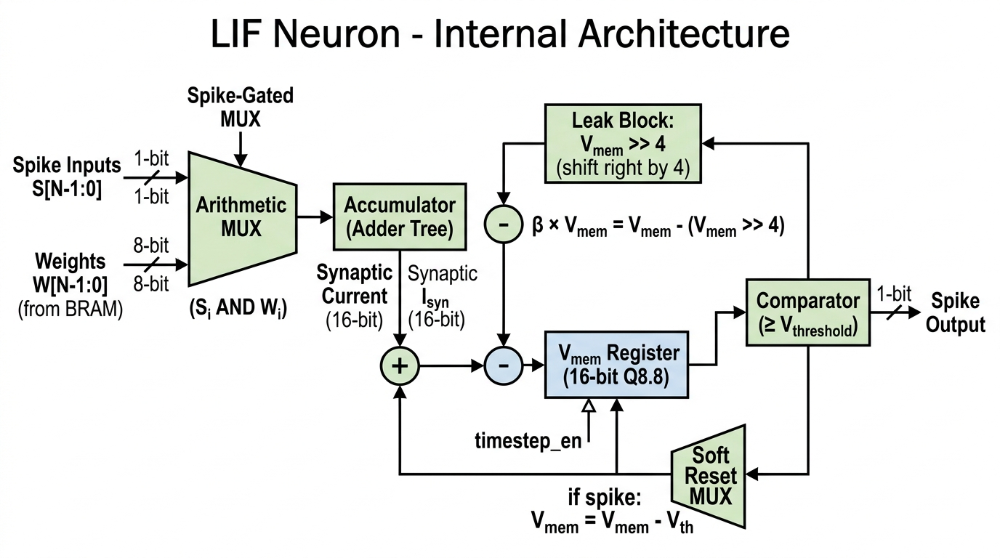
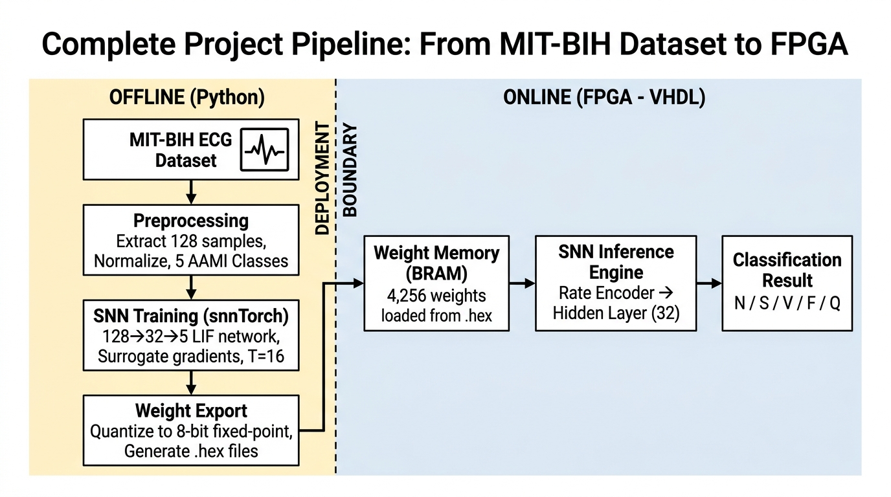

Part 1: How the Hardware Works (The Block Diagram)
Imagine the hardware as an assembly line where an ECG heartbeat enters on one side and a diagnosis comes out the other. Here is what happens inside the FPGA:

Figure 1: Top-Level System Block Diagram for the ECG SNN.
1. The Input (ECG Heartbeat Data)
Instead of feeding continuous, endless ECG data, our Python script slices the dataset so that the FPGA receives one complete heartbeat at a time. This window is exactly 128 samples long. Think of this as 128 separate amplitude values that describe the shape of the heartbeat (the P, Q, R, S, and T waves).
2. Rate Encoder (Turning Numbers into Spikes)
The FPGA's SNN engine only understands binary (1s and 0s), but our ECG data consists of continuous amplitude values.
- How it works: We use 128 individual "channels". Each channel takes one of the 128 ECG samples and compares its amplitude to a rapidly changing random number (generated by a Linear Feedback Shift Register, or LFSR).
- The Result: If the ECG amplitude is high, it generates a lot of spikes (1s). If it's low, it generates fewer spikes. This outputs a 128-bit spike vector (a string of 128 ones and zeros) every single clock cycle.
3. Hidden Layer (32 LIF Neurons)
This is where the actual "thinking" happens. The 128-bit spike vector enters 32 Leaky Integrate-and-Fire (LIF) neurons.
- Every neuron is connected to every input, requiring 4,096 weights (128 × 32). These weights are stored in the FPGA's Block RAM (BRAM).
- Multiplier-Free Magic: If an incoming spike is '1', the hardware simply adds the corresponding weight to the neuron's membrane potential (its internal memory). If the spike is '0', it does nothing. There is absolutely no multiplication required, saving massive amounts of FPGA resources.
- The Leak: Every cycle, the neuron loses a bit of its membrane potential (the leak factor β=0.9375). We do this by simply shifting the binary number to the right by 4 bits and subtracting it. Again, no multipliers!
- When a hidden neuron's potential gets too high, it fires a spike, creating a 32-bit spike vector.

Figure 2: Internal Architecture of the multiplier-free LIF Neuron.
4. Output Layer (5 LIF Neurons)
The 32-bit spike vector from the hidden layer travels to the 5 output neurons. These 5 neurons represent the 5 AAMI classes (Normal, Supraventricular, Ventricular, Fusion, Unknown). This layer works exactly like the hidden layer but only requires 160 weights (32 × 5).
5. Processing Over Time (Timesteps)
A single spike doesn't tell us much. The Controller FSM (Finite State Machine) forces the network to process this exact same heartbeat 16 times (16 timesteps). Over these 16 timesteps, the output neurons slowly accumulate voltage based on the pattern of spikes they see.
6. Argmax Classifier (The Final Decision)
After 16 timesteps, the hardware stops the network and looks at the membrane potential (voltage) of the 5 output neurons. The Argmax block simply compares the 5 values. Whichever neuron has the highest voltage "wins". It outputs a 3-bit binary code (000 to 100) representing which of the 5 arrhythmias was detected!
Part 2: The Project Pipeline (How we actually build it)
Because Spiking Neural Networks are notoriously hard to train directly on hardware, we split the project into two distinct phases (as shown in the Pipeline diagram):

Figure 3: Complete Project Pipeline - From MIT-BIH Dataset to FPGA Deployment.
Phase 1: Offline (Python on your laptop)
- Dataset & Preprocessing: We take the raw MIT-BIH dataset and run a Python script to isolate individual heartbeats into 128-sample windows.
- Training: We use a Python library called
snnTorch. It trains the network using a trick called "surrogate gradients" until it can accurately classify the 5 arrhythmias.
- Export: The trained weights in Python are floating-point numbers (like
0.452). An FPGA hates floating-point numbers. So, we quantize them into 8-bit integers (e.g., converting 0.452 to 58). We save these integer weights as .hex files.
Phase 2: Online (VHDL on the FPGA)
- We take those
.hex files and load them directly into the FPGA's Block RAM (BRAM) when the device powers on.
- We feed our VHDL hardware architecture the raw ECG samples, and it uses those pre-trained BRAM weights to classify the heartbeats in real-time.
Summary
This is a very elegant architecture because it completely eliminates digital multipliers, making it perfect for low-power edge devices like pacemakers or wearable ECG monitors!